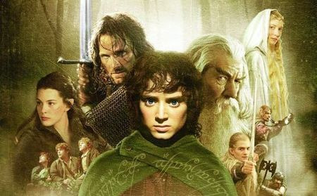

A Gyűrűk Ura: A Gyűrű Szövetsége (eredeti cím: The Lord of the Rings: The Fellowship of the Ring) 2001-ben bemutatott négyszeres Oscar-díjas új-zélandi–amerikai fantasyfilm Peter Jackson rendezésében. A film J. R. R. Tolkien azonos című epikus fantasy-regényén alapuló A Gyűrűk Ura-filmsorozat első darabja. A rajongók között a cím általános rövidítése az eredeti címből adódó „FotR”, mely magyarra átültetve: „GySz”.
Sauron, a Sötét Úr az Egy Gyűrűt kutatja, aminek segítségével meghódíthatja Középföldét. A Gyűrű útja a fiatal hobbithoz, Zsákos Frodóhoz vezetett, akinek el kell pusztítania a birtokába jutott apró tárgyat, hogy megállítsa Szauront és seregét. A Gyűrű Szövetségének megalakulásával Középfölde sorsa Frodón és nyolc útitársán áll: útjuk a Végzet Hegyéhez vezet, Mordor földjére, az egyetlen helyre, ahol a Gyűrűt meg lehet semmisíteni.
A 2001. december 19-én bemutatott filmet kiemelkedően jól fogadták mind a kritikusok, mind a rajongók, különösen utóbbiak ítélték meg úgy, hogy kellő hűség mutatkozik meg az eredeti történethez viszonyítva. A mozipénztáraknál is sikert aratott a produkció, több mint 870 millió dollárt keresve világszerte, kicsivel lemaradva csupán az éves lista első helyéről, melyet a Harry Potter és a bölcsek köve szerzett meg. Világviszonylatban A Gyűrű Szövetsége minden idők 11. legsikeresebb filmjévé vált. A film bővített változatát tartalmazó DVD-kiadás 2002. november 12-én látott napvilágot.
Alan Lee és John Howe voltak a filmtrilógia alapvető konceptuális tervezői, akik már rendelkeztek tapasztalattal, mint a könyv illusztrátorai. Howe alkotta meg például Zsáklak enteriőrjét, kibővítve korábbi, a Középfölde térképgyűjteményen végzett munkáját. Lee munkája Völgyzugoly, Mória és Lórien.
A Gyűrűk Ura-filmek zenéjét Howard Shore komponálta. Két eredeti dal, köztük a végefőcím dala, a „May It Be”, Enya szerzeménye és előadása. Mindhárom rész filmezenalbumát a Warner Music Grouphoz tartozó Reprise Records adta ki.
A moziváltozat sikerének köszönhetően megjelent a film bővített kiadása (208 perc), új vágással, további speciális effektusokkal és zenével. Ezen DVD-kiadvány megjelenésére 2002. november 12-én került sor, s tartalmaz négy audiokommentárt és többórányi további bónuszanyagot. A nagy sikernek hála a folytatások is megérték a hasonló megjelenést.
Az Utolsó Szövetség és Szauron seregeinek ütközetéhez, amivel a film kezdődik, egy különálló CGI animációs rendszert fejlesztett ki Stephan Regelous, amit Massive-nak neveztek el, ezen program alkalmazásával lehetőség nyílik különálló „karakterek” ezreinek egymástól független animálására. Mindez elősegítette a csatajelenetek realizmusának illúzióját.